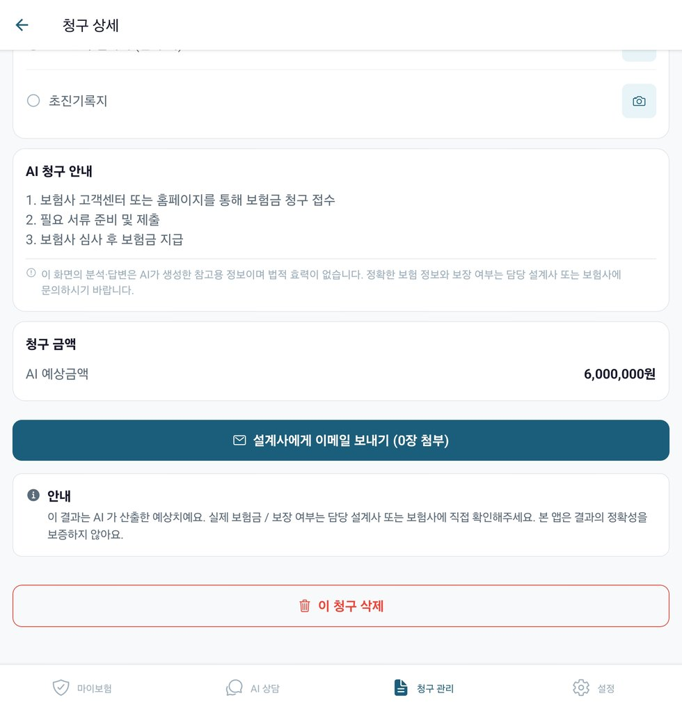
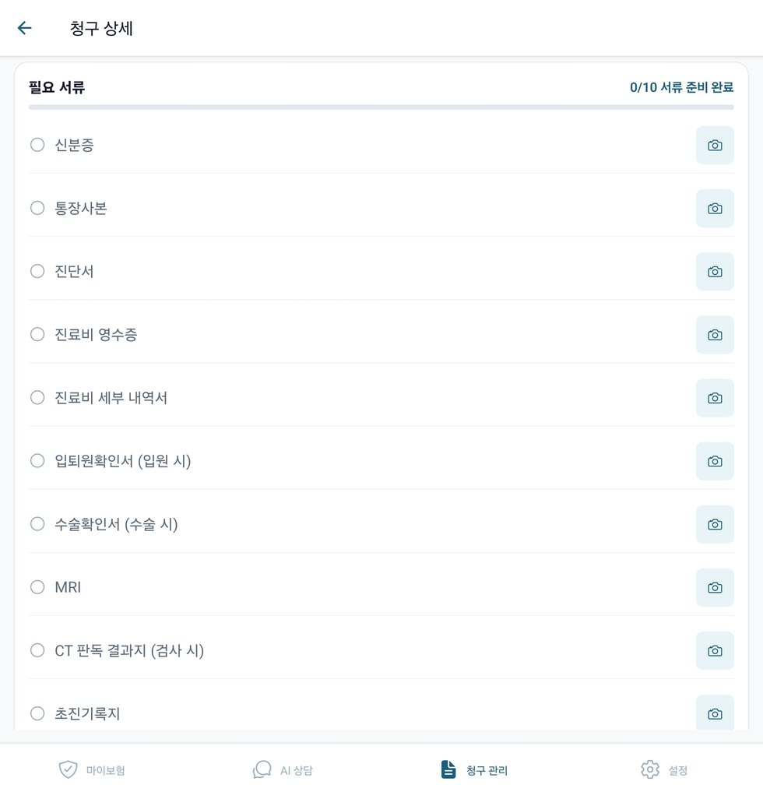
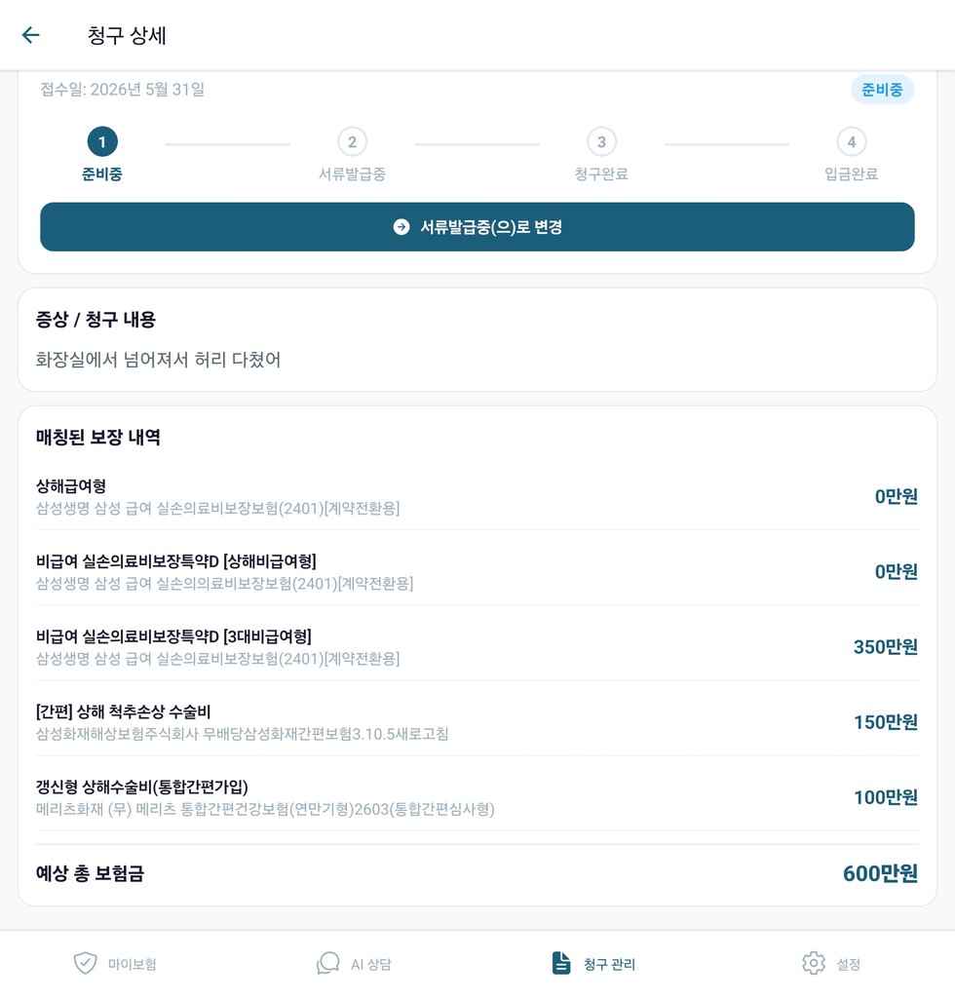
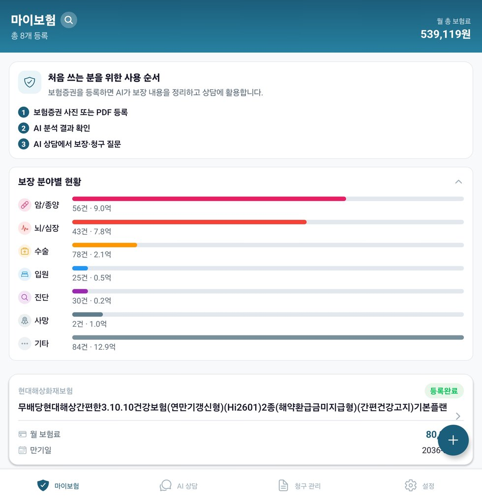
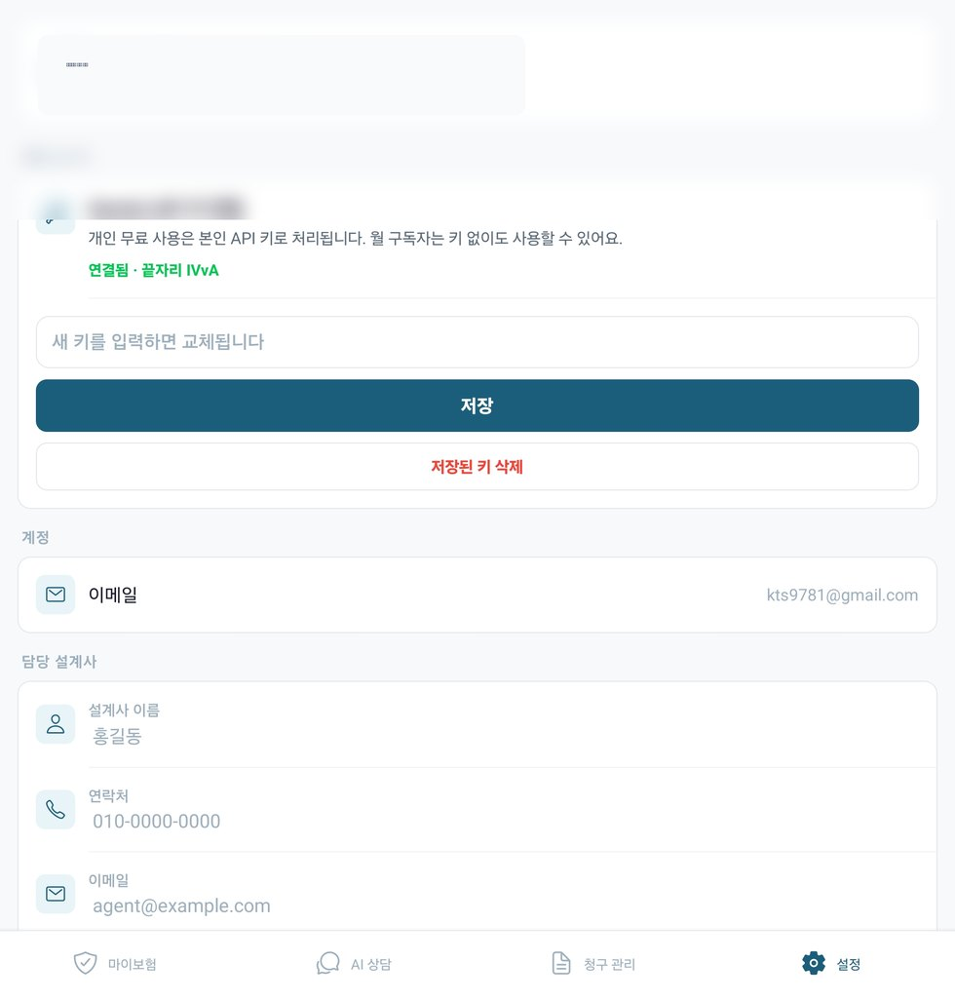

📄
보험증권이 너무 어려울 때
보험사, 상품명, 월보험료, 특약 목록을 구조화해 한눈에 볼 수 있게 정리합니다.
수십 페이지 보험증권과 어려운 특약명을 AI가 보기 쉽게 정리하고, 청구 준비에 필요한 정보를 단계별로 안내합니다.
보험사, 상품명, 월보험료, 특약 목록을 구조화해 한눈에 볼 수 있게 정리합니다.
일상적인 표현으로 상황을 입력하면 등록된 특약과 연결해 확인할 항목을 제안합니다.
진단서, 수술확인서, 영수증 등 준비할 서류와 발급처를 체크리스트로 안내합니다.
사진/PDF 보험증권에서 기본정보와 특약을 추출해 저장합니다.
전체 월보험료와 보장 카테고리를 한눈에 확인합니다.
증상이나 시술을 자연어로 입력하면 관련 특약을 찾아봅니다.
필요 서류, 발급처, 청구 절차를 단계별로 정리합니다.
청구 상황과 필요 자료를 설계사에게 보낼 문장으로 정리합니다.
준비중, 서류발급중, 청구완료, 입금완료 상태를 관리합니다.
어려운 보험증권을 사진이나 PDF로 등록하면 기본정보와 특약 목록을 구조화해 보여줍니다.


“MRI 찍었어”, “입원했어”, “수술했어”처럼 입력하면 내 보험 특약과 연결해 확인해야 할 항목을 안내합니다.

여러 보험의 월보험료, 보장 카테고리, 특약 구성을 대시보드에서 빠르게 파악할 수 있습니다.

보험증권을 등록한 뒤 AI가 정리한 내용을 확인하고, 궁금한 상황을 상담으로 입력하면 됩니다.
홍보용 스크린샷은 개인정보 노출을 줄이기 위해 일부 정보가 축소/보호 처리되어 있습니다.


아니요. AI 안내는 참고용입니다. 실제 청구 가능 여부와 최종 지급 판단은 보험사 또는 담당 설계사에게 확인해야 합니다.
보험별 특약을 기준으로 상담하려면 증권 등록이 필요합니다. 사진/PDF 등록 또는 수동 입력을 사용할 수 있습니다.
입원, 수술, 검사, 진단, 약 처방 등 실제 상황을 일상적인 문장으로 입력하면 됩니다.
네. 매칭된 특약, 예상 보험금, 필요 서류를 정리해 전달용 문장으로 만들 수 있습니다.